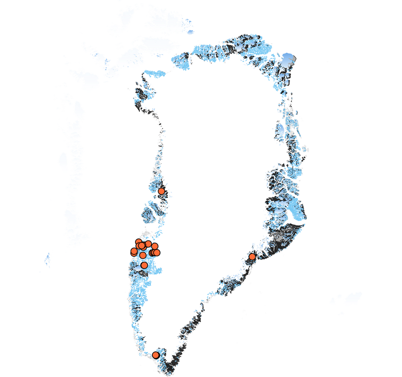

Mineral Riches and Melting Ice: Greenland’s Rare Earth Opportunity And Challenge

Tucked in the far northeast corner of North America, inhabited by the indigenous Inuit people for thousands of years, lies the largest island on the globe - Greenland. With a population of just over 56,000 people, and 80% of its land covered by ice, the island is known more for its ice sheets and beauty than its mineral riches. Yet locked beneath Greenland's surface are sources of a potential transformation in the global supply of rare earth elements (REEs) - the crucial ingredients that power our electronic devices and future green technologies.
With the race to mine rare earth minerals intensifying in order to meet the zero carbon pledges of 2030 and beyond that many countries have committed to, Greenland finds itself in the geopolitical spotlight. China, which already dominates the rare earth market, refining over 70% of the world’s supply due to lower costs and less stringent regulations, has leveraged its dominance before, suspending exports to Japan in 2010 over territorial disputes. Now, as tensions with the West grow, China is again flexing its muscle over these critical minerals. New export limits on germanium and gallium, used in semiconductor and military technologies, along with threats to prohibit exports of magnet processing technology, have set off alarm bells.
China’s Dominance Across the Rare Earth Elements Supply Chain
Global Production
Global Processing
Global Consumption
20
60
80
40
%
China
United States
Australia
Rest of the World
Source: U.S. Geological Survey, International Energy Agency
Each cell represents 1%
Chart By: Vivek Patil
The West is seeking to reduce its vulnerability and develop alternative rare earth supply chains not dependent on China. And Greenland, with its vast untouched deposits, may hold the key. According to a recent dataset, “just two mines in Greenland - Kvanefjeld and Kringlerne - hold enough valuable deposits that they could potentially account for 22% of the total new rare earth production value from all the emerging projects worldwide.” Although its current output is negligible, the researchers compare Greenland’s share of REE resources to entire continents and find that the island possesses the third-largest share, behind the continents of Asia and Australia.
The report, the most comprehensive dataset of its kind to date, analyzed over 146 rare earth mining projects that account for 303.4 million tons of rare earth oxides worldwide. Researchers at the Chinese Academy of Sciences, Geological Survey of Finland, and Minmetals Rare Earth Group forecast a transformation in global rare earth element supply driven by new projects outside of China.
Just Two Mines In Greenland Hold 13% of World’s Rare Earth Resources, 22% of Value
100%
S. America
4%
90
Australia
22%
80
Europe
22%
70
Africa
N. America
60
Greenland
50
13%
54%
40
30
Asia
45%
20
10
0
Total Value (%)
Total Resource (%)
Note: : Data on rare earth resource and value distributions by continent are estimated values from Fan et al. (2023). The percentages indicate each location's share of
total global rare earth resources and total value as analyzed and projected in the study based on known reserves and projects.
Source: S. Liu, H. Fan, H. Liu, X. Lui, J. Meng et al. Global rare earth elements projects: New developments and supply chains (2023)
Chart By: Vivek Patil
Rare earths, also known as 'the seeds of technology' are not as rare as their name suggests. These elements, which are mined and processed around the globe, are more abundant than precious metals like gold, but extracting them in high concentrations and achieving economic viability is what makes them rare. They possess unique magnetic, phosphorescent, and catalytic properties that make them essential for today's electronics, green technologies, and military applications.
Prices for key rare earth oxides have steadily increased over the past two years due to surging demand and restricted supply. According to a MarketsandMarkets report on the rare earth metals, the market is projected to reach over 10 billion dollars by 2026, from 5.3 billion dollars in 2021.
Greenland has historically stayed at the margins of the global economy due to its remote location, lack of infrastructure and small population. Yet, this isolation has worked in its favor to preserve the natural habitat and local heritage. For decades, Greenland has relied heavily on fishing and an annual $511 million subsidy from Denmark to balance its books. But the nation has also been taking gradual steps to leverage its vast mineral wealth and gain greater economic autonomy.
While rare earth elements are only now grabbing headlines, Greenland's mining aspirations began decades ago, when the first traces of radioactive elements like uranium and thorium were found in 1957. After discovery, speculation grew about high concentrations of mineral wealth on the island. In the 1970s, the Kvanefjeld mine in southern Greenland, just 5 kms from Narsaq, was found to hold rich deposits of rare earth oxides along with uranium. During the Cold War, the U.S. and its ally Denmark made Kvanefjeld mine a point of interest as the U.S. military was looking for nuclear fuel and materials. In 1983, Demark dropped the plan and the mining site was left abandoned. With China's rising dominance in rare earths in the 2000s, Greenland reopened the door to mining Kvanefjeld, lifting a longstanding ban on uranium extraction. In 2007, an Australian company called Greenland Minerals and Energy (GME) started drilling and exploring in the Kvanefjeld mine, which they claimed was the second largest rare earth deposit in the world. GME said Kvanefjeld could become the ‘most significant western world producer of critical minerals’.
Scroll down to see the next mine...
hfuwhefuefuerh9h
After exploring the interactive map, you might have gathered a lot of insights about the various mines. Each mine has its own unique story, geological significance, and economic impact.
Throughout history, these mines have played pivotal roles in shaping the industries and economies of their respective regions. Whether it's the extraction of precious metals or rare minerals, the mining sector has been a cornerstone of industrial development.
Continue scrolling to learn more about individual mines, their histories, and their current statuses.